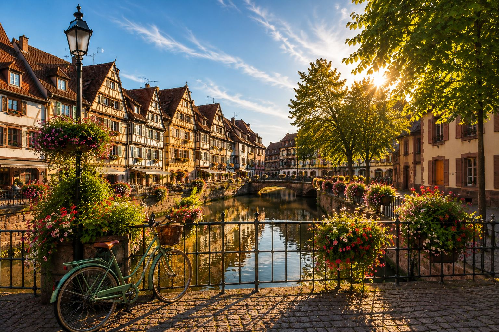

L'Alsace au rythme du vélo.
Vélos classiques et électriques à louer à Colmar, de la demi-journée à la semaine. Casque, antivol et itinéraire compris.
Classique ou électrique
Vélos de ville sept vitesses et VAE avec 90 km d'autonomie, révisés après chaque location.
De la demi-journée à la semaine
Tarif dégressif dès deux jours. Retrait dès 9 h, retour avant 12 h 30 ou avant 19 h.
Onze parcours mesurés
Distance, dénivelé et durée calculés sur le tracé réel, pas estimés à la louche.
Tout est compris
Casque, antivol, sacoche, kit crevaison, éclairage et assistance téléphonique.
Tarifs
Par vélo, taxes comprises. Le règlement se fait sur place, au retrait.
| Vélo | Demi-journée | Journée | 2 jours | 3 jours | 7 jours |
|---|
Caution prise sur place au retrait : 300 € par vélo classique, 600 € par vélo électrique, 150 € par vélo enfant ou remorque. Aucun paiement n'est demandé sur ce site.
Compris dans chaque location
- Casque à votre taille, obligatoire pour les moins de 12 ans
- Antivol en U et sa clé
- Sacoche ou panier, selon le vélo
- Kit crevaison, pompe et chambre à air de rechange
- Éclairage avant et arrière conforme
- Carte papier de la balade choisie et numéro d'assistance
Horaires
- Retrait à partir de 9 h, du lundi au samedi
- Retour avant 12 h 30 pour une demi-journée matin, avant 19 h pour une journée
- Dimanche et jours fériés : retrait sur rendez-vous uniquement
Comment ça marche
Vous réservez en ligne
Date, durée et nombre de vélos. Aucune donnée bancaire n'est demandée.
Vous recevez un code
Il ouvre la messagerie avec l'équipe, sans compte ni mot de passe.
Vous réglez au retrait
Sur place, avec une pièce d'identité et la caution. Les conditions vous sont remises en main propre.
Réserver vos vélos
Choisissez la date et la durée : les disponibilités affichées sont réservables immédiatement.
Votre réservation
Aucun paiement en ligne : le règlement se fait sur place au retrait du vélo. Ce site ne demande et ne conserve aucune donnée bancaire.
Réservation confirmée
Les conditions sont remises au point de location
- Le contrat complet, les conditions de location et l'état du vélo vous sont remis et signés au retrait, pas avant.
- Une pièce d'identité en cours de validité est demandée et vous est rendue au retour du vélo.
- La caution est prise sur place et restituée à la restitution du vélo en bon état.
- Le vélo est vérifié devant vous au départ et au retour : freins, pneus, éclairage, batterie.
- Vous ne pouvez pas venir ? Prévenez-nous par la messagerie ou par téléphone, nous libérons le vélo. Aucun frais n'est retenu.
À prévoir de votre côté
- Une pièce d'identité, et de quoi régler sur place
- Un gilet rétro-réfléchissant si vous roulez de nuit hors agglomération : il est obligatoire et nous pouvons vous en prêter un
- De l'eau, de la crème solaire et un coupe-vent : dans le vignoble, la météo change vite
Location de plusieurs jours
Le vélo reste à vous, nuits comprises. Prévoyez un local fermé ou demandez-nous la liste des hébergements qui en proposent un. Pour un vélo électrique, une prise standard suffit à recharger la batterie en quatre heures.
Onze balades au départ de Colmar
Toutes en boucle, du tour de ville d'une heure à la journée complète. Distance, dénivelé et durée sont mesurés sur le tracé réel. Cliquez sur un parcours pour l'afficher.
Le vignoble à vélo
Dix-sept villages accessibles depuis Colmar, avec leurs grands crus et leurs cépages. Comptez une dégustation par sortie, pas davantage.
Les domaines bio sur votre parcours
Près de 34 % de la surface viticole alsacienne est conduite en agriculture biologique selon la Chambre d'agriculture d'Alsace.
Les caves ouvrent en général du lundi au samedi ; beaucoup reçoivent sur rendez-vous.
Découvrir l'Alsace
Quinze sites autour de Colmar. Le moyen de transport conseillé est indiqué pour chacun.
Nos partenaires
Un réseau en construction autour de six familles de partenaires.
Vous voulez rejoindre le réseau ?
Écrivez-nous : nous cherchons des partenaires proches des parcours, ouverts aux cyclistes et capables d'accueillir sans réservation longue à l'avance.
Suivi de votre réservation
Entrez le code reçu à la réservation pour écrire à l'équipe. Aucun compte à créer, aucun mot de passe.
Problème urgent sur la route, crevaison ou chute : appelez le 06 64 43 28 03.